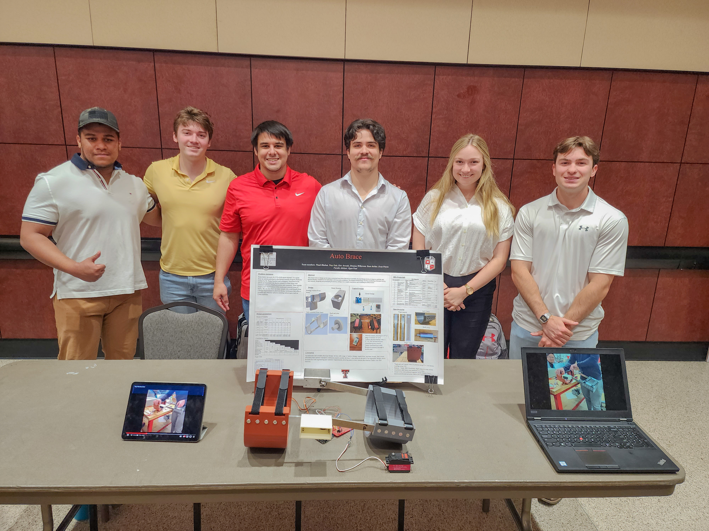

My Projects
A team of five senior engineering students embarked on an ambitious journey to invent a cutting-edge physical therapy device aimed at addressing three critical challenges associated with knee-related injuries. Their innovation, marked by its remote control recovery system with inputs from physicians and users, not only improved the 0-90 ROM progression but also excelled in scar tissue repair. Employing a systematic approach, they implemented four Six Sigma principles, meticulously crafted Standard Operating Procedures, conducted comprehensive customer surveys, and performed root cause analyses to optimize design and engineering aspects. Remarkably, they accomplished all of this within a tight production budget of $450, resulting in the manufacturing and testing of the Minimum Viable Product (MVP) with just 33% of the allocated funds. Leveraging advanced CAD tools like Solidworks and Autodesk Inventor, as well as Statistical Tolerance Analysis, FEA (Ansys), DFM/DFA principles, and thorough prototyping, they rigorously tested various parameters such as angle/speed of rotation, torque generation, product strength, and failure under four different operating conditions. Their journey also encompassed creating an intricate control system using Arduino, featuring two control modules (IR and Bluetooth) and integrating 15 electronic components to offer three essential functionalities: ROM training, speed control, and resistance training. Their dedication and innovation culminated in an award-winning presentation at TTU's URC, DTI, and Senior Design expo, where they secured the coveted People's Choice award for innovation through public voting, surpassing over 100 competing projects. Currently, they are in the process of patenting their groundbreaking invention, marking a remarkable achievement in the field of physical therapy technology.
- 2D drafting, CAD, FEA,Control system
- Final Product
- Testing and awards


During my tenure as an officer for aerodynamics and body lead at the Society of Automotive Engineers (SAE) chapter of Texas Tech University from January 2022 to April 2023, I played a pivotal role in driving innovative solutions and improving the overall performance of our Formula SAE (FSAE) team. I spearheaded the resolution of three critical aerodynamic issues through a rigorous process of iterative Computational Fluid Dynamics (CFD), heat transfer analysis, and numerical analysis. These efforts resulted in an impressive 50% reduction in radiator coolant temperature and a 7% decrease in drag, enhancing our car's efficiency. Furthermore, I oversaw the production of four SAE rule-compliant composite parts and their assembly, leveraging 2D drafting, CAD, DFM/DAE, and FEA techniques. This meticulous approach allowed us to develop detailed Standard Operating Procedures (SOPs) based on the experiences of previous TTU aerodynamic teams, ultimately saving 21% in costs. Collaboration was a cornerstone of my role, as I led and worked closely with 18 technical officers responsible for other car components and engaged with 78 student members. Through effective teamwork and communication, we achieved a remarkable 15% increase in member retention compared to the previous year. Additionally, I proactively reached out to 18 potential composite sponsors, optimizing our budget of $4,200 and implementing Lean Six Sigma methodologies for recycling and reusing inventory materials to maximize efficiency and sustainability. My dedication also extended to representing our team at FSAE 2022 in Michigan, where we showcased our innovations and expertise in the field of automotive engineering.
- Race Car build

Working with Dr. Robert Duncan, Professor & President’s Distinguished Chair in Physics Department of Physics and Astronomy, Texas Tech University, and his team of scientists and Engineers. I with one of my engineering friend(Kevin Fehr) teamed up to build this project from the ground up over 3 months, starting May 2020-August2020

- Experimenting, designing,3D-modeling, researching, analyzing results, and improvising to various variables to of an effective nuclear engine and engaging in the project estimated to be over $40k in the budget including the high-tech Equipment used
- Researching, cooperating, learning, documenting, and discussing with the team of Dr. Robert Duncan comprising 27 people and a fellow student on this project, in addition to working in a lab environment and over 2 machine shops.
- This resulted in getting valuable data on the potential of fusion energy, that which might have future implications for a sustainable energy source.
Phone
(+1) 806-281-2178Address
10728 Troutt Dr,Mckinney,Tx,75070
United States of America